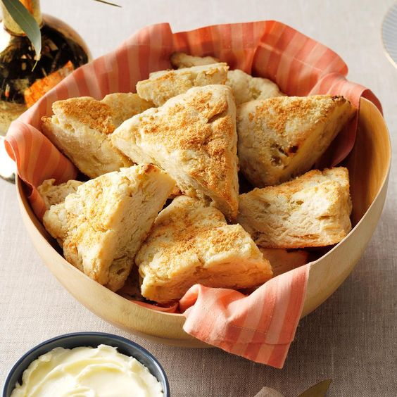

Scone

Description
Scones are a really delicious, sweet or savoury buttery treat.
This recipe creates UK type scones, which are really flaky and just melt in your mouth.
They are really adaptable, you can add cheese to make them savoury, or add dates and raisins
for a sweet touch.
Ingredients
To make them you will need:
- 226g butter
- 420g flour
- 50g sugar
- 1 tablespoon baking powder
- 1 tablespoon of salt
- 300g buttermilk (+extra for brushing on top)
Steps
- Preheat oven to 190°C.
- Freeze the butter in 1 cm cubes while you
prepare the other ingredients.
- Whisk together the sugar, baking powder, salt and sifted flour.
Then add the butter from the freezer, making sure to coat it fully in flour,
mashing it into flat pieces.
- Add half of the buttermilk and mix it in with a fork, then repeat with the
the remaining buttermilk. At this stage the dough should be more crumbly than sticky.
- Gently press the crumly dough together on a (preferably cold)
work surface using your hands. Fold the dough in hald, and shape the dough once more.
Rotate a quarter turn and repeat the process. The dough will stay crumbly but will start to form
form together, so don't sweat it. Pat it down to about 5 cm tall.
- To laminate the dough and make it crumbly and buttery, cut it
into 3 pieces and layer one on top of the other. Then flatten the dough out gently.
Then cut the dough in half and repeat the process two times to create layers of butter.
- Form the dough into a circle about 5 cm tall. Then slice into 8
triangular pieces.
- Lay the scones onto a parchament-lined baking sheet, so that they don't stick.
Remember to brush the tops with a little more buttermilk for a golden top!
- Bake for 30-35 minutes and enjoy warm!
Notes
This recipe is an adaptation of the recipe from the lovely
Justine Doiron of Justine Snacks.
She makes amazing recipes as well as great quality videos of them on Youtube!